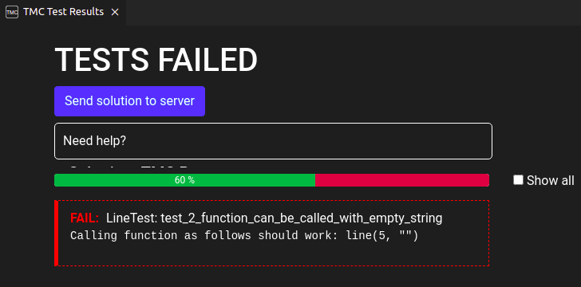
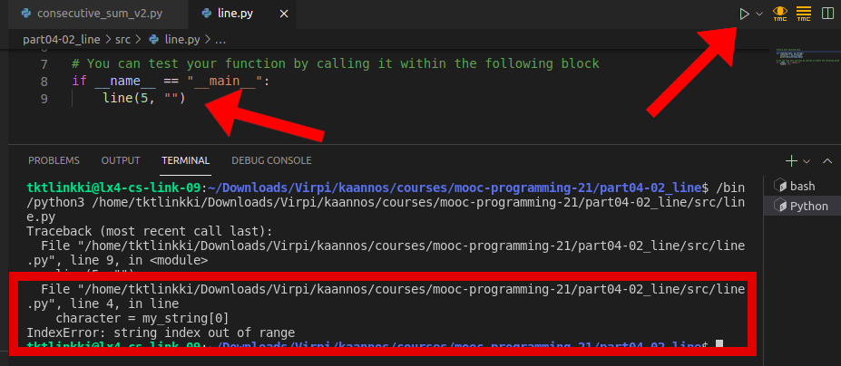

Let’s quickly recap Python functions. Functions are defined with the keyword def:
def message():
print("This message was brought to you by a function")
This function can be called in your program code like this:
message()
Your program would then print out
A function can take one or more arguments. When the function is called, the arguments are assigned to variables, which are defined in the function definition. These variables are called parameters, and they are listed inside the parentheses after the function name.
In the following code the function greet has one parameter defined, while the function sum has two.
def greet(name):
print("Hello there,", name)
def sum(a, b):
print("The sum of the arguments is", a + b)
greet("Emily")
sum(2, 3)
Most exercises on this course have automatic tests attached to them. If your program doesn’t work as specified in the task, the tests will show an error message, which may or may not be helpful. It is usually worth the trouble to read the error message carefully.
In some situations the error message might not tell you very much at all. In the next exercise below you may come across this error message:

The message just states that you should be able to call the function line with the specified arguments:
line(5, "")
The actual issue becomes clear when we try executing the function call specified in the error message. You can do this by copying the function call into your program and clicking on the triangle:

The last lines produced by the execution, highlighted in the above image, tell us that line 4 of our code causes the error IndexError: string index out of range. In the previous part there was a similar example, where we tried to use an index that fell outside the scope of the string. This time the error appears because we are trying to access the first character of an empty string, that is, a string of length 0.
%%%%%%% LLLLLLLLLL ***
You can call a function from within another function. In fact, we have done so many times before, when we called the print function within our own functions in the previous part. Our own functions are functionally no different. In the following example the function greet_many_times calls the function greet as many times as specified by the argument times:
def greet(name):
print("Hello there,", name)
def greet_many_times(name, times):
while times > 0:
greet(name)
times -= 1
greet_many_times("Emily", 3)
########## ########## ########## ########## ########## ########## ##########
##### ##### ##### ##### ##### ### ### ###
***** ***** ***** ***** ***** ooo ooo ooo
# ## ### #### ##### ###### # ## ###
X XX XXX XXXX XXXXX ***** ***** ***** o oo ++ ++ ++ ++ . .. ...
a spruce! * *** ***** *
a spruce!
*
***
*****
*******
*********
*
Functions can also return values. For instance, the built-in Python function input returns an input string typed in by the user. The value returned by a function can be stored in a variable:
word = input("Please type in a word: ")
When you want an integer value from the user, the input from the user has to be converted into an integer. The function we’ve used for this purpose is int, and it also returns a value:
number = int(input("Please type in an integer: "))
The function int takes the string returned by input as its argument, and returns an integer type value, if an integer can be parsed from the string.
The functions you define yourself can also return values. To do this you need the return statement. For example, the following function my_sum returns the sum of its parameters:
def my_sum(a, b):
return a + b
result = my_sum(2, 3)
print("Sum:", result)
Here’s another example of a return value. This function asks for the user’s name and returns the string the user types in:
def ask_for_name():
name = input("What is your name? ")
return name
name = ask_for_name()
print("Hello there,", name)
The return statement ends the execution of the function immediately. The following is a nifty way to create a comparison function:
def smallest(a,b):
if a < b:
return a
return b
print(smallest(3, 7))
print(smallest(5, 2))
The idea here is that if a is smaller than b, the function returns a and exits immediately. If not, the execution continues to the next line, where the value b is returned. A function can never execute two separate return statements with a single function call.
You can make use of the return statement even if the function doesn’t return a value. Its purpose then is to end the execution of the function:
def greet(name):
if name == "":
print("???")
return
print("Hello there,", name)
greet("Emily")
greet("")
greet("Mark")
If the argument (which gets stored in the variable name) is an empty string, the function prints out ??? and exits.
We already know that the return values of functions can be stored in variables:
def my_sum(a, b):
return a + b
result = my_sum(4, 6)
print("The sum is", result)
The return value of a function is a value just like any other. It is not necessary to store it in a variable in order to give it as an argument to the print command:
print("The sum is", my_sum(4, 6))
The return value of a function can become the argument of another function:
def my_sum(a, b):
return a+b
def difference(a, b):
return a-b
result = difference(my_sum(5, 2), my_sum(2, 3))
print("The result is", result)
In this case the inner function calls my_sum(5, 2) and my_sum(2, 3) are executed first. The values they return (7 and 5) are used as the arguments of the outer function call.
The outer function call difference(7, 5) returns the value 2, which is stored in the variable result and printed out.
In summary, values returned by functions work exactly like any other value in Python. They can be printed out, stored in variables, used in expressions and used as arguments in other function calls.
Sometimes the difference between a function returning a value and a print statement within a function can be confusing. Let’s have a look at two different ways of implementing a function for working out which of two values is greater:
def max1(a, b):
if a > b:
return a
else:
return b
def max2(a, b):
if a > b:
print(a)
else:
print(b)
result = max1(3, 5)
print(result)
max2(7, 2)
Both versions seem to be working just fine, as the maximum values are printed correctly. There is a fundamental difference between the two, however. The first of the two functions, max1, does not print out anything on its own, but instead it returns the value which is greater. If we execute the following line
max1(3, 5)
nothing seems to happen. The return value of the function has to be used in some way in the code which called the function. For instance, it can be stored in a variable and printed out:
result = max1(3, 5)
print(result)
The second version, max2, uses the print command within the function to print out the greater value. If we want to see the value, it is enough to call the function
max2(7, 5)
and the greater value is printed out. The downside of this handy function is that the value worked out by the function is not available for use in the program which called it. That is why functions which return values are often the better option.
A quick recap of the data types we’ve come across so far:
| Type | Python data type | Example |
|---|---|---|
| integer | int |
23 |
| floating point number | float |
-0.45 |
| string | str |
"Peter Python" |
| Boolean value | bool |
True |
When you call a function, it will only work correctly if the arguments you give it are of the right type. Let’s have a look at an example:
def print_many_times(message, times):
while times > 0:
print(message)
times -= 1
The function works as expected if we call it like this:
print_many_times("Hello there", 5)
However, if we give the function an argument of the wrong type, it will not work:
print_many_times("Hello there", "Emily")
The problem here is that the second parameter times is compared to an integer, 0, on line 2 of the function definition. The argument given was "Emily", which is a string, not an integer. Strings and integers cannot be compared so simply, so an error ensues.
To avoid issues like this you can include type hints in your function definitions. The type hint specifies the type of the argument intended for the function:
def print_many_times(message : str, times : int):
while times > 0:
print(message)
times -= 1
This tells anyone using the function that the argument stored in message is supposed to be a string, and the argument stored in times is supposed to be an integer.
Similarly, the return value of a function can be hinted at in the function definition:
def ask_for_name() -> str:
name = input("Mikä on nimesi? ")
return name
This tells the user of the function that the function is supposed to return a string.
NB: Type hinting is literally just hinting about the type of the argument or the return value. It is not a guarantee of type, and definitely not a safeguard against type errors. If a function receives an argument or returns a value of the wrong type, the function is still executed, but it might not work correctly.